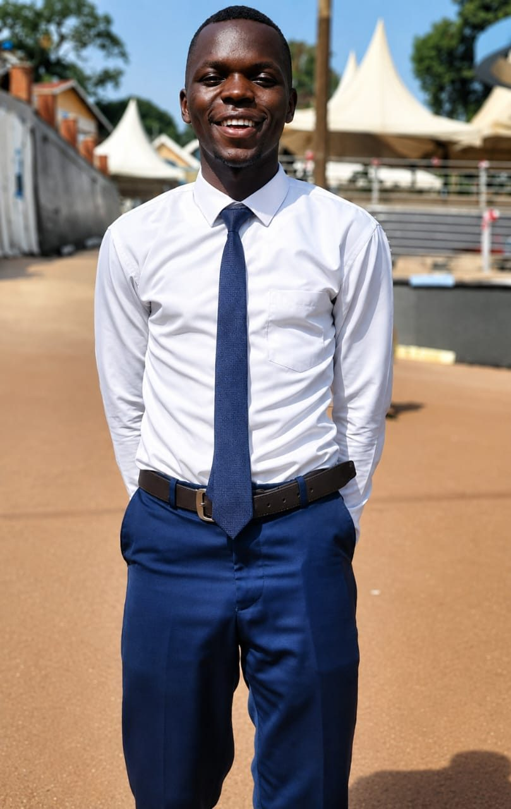
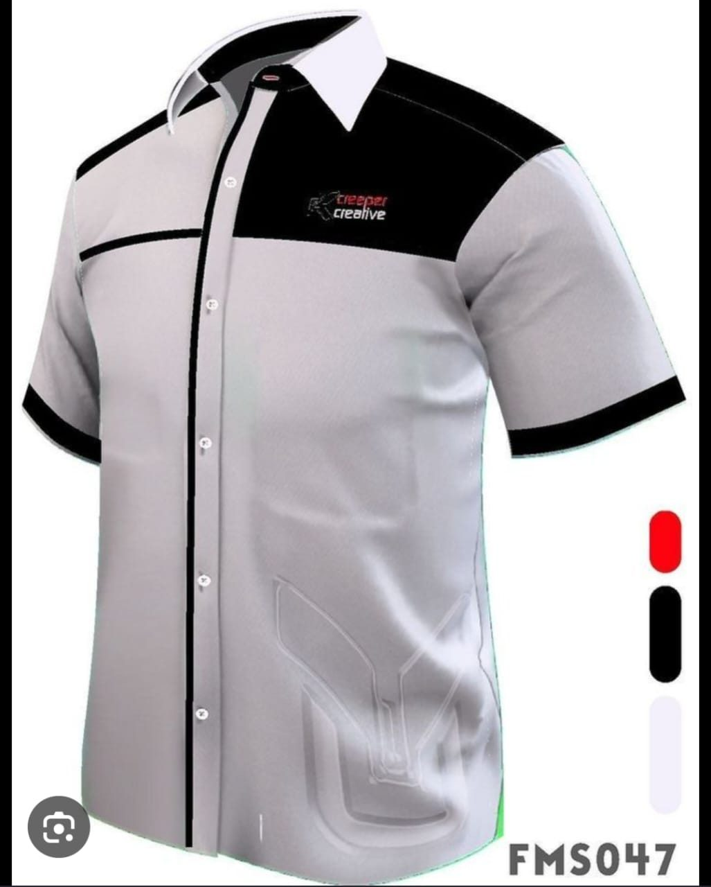
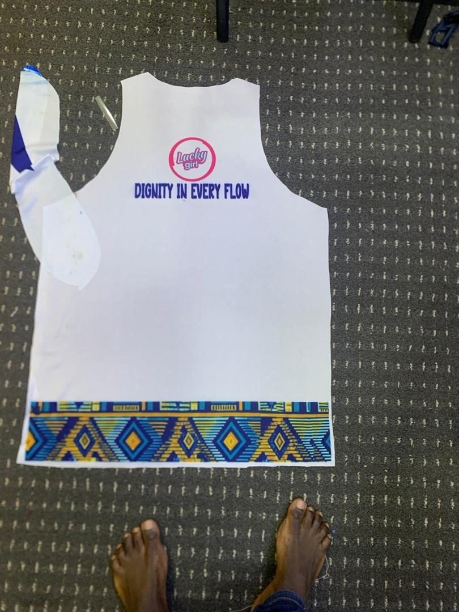

Company Overview
A studio built around one belief: your visuals should carry your credibility.
Omalo Graphics Centre Ltd is a professionally managed graphics, printing, branding and visual communication company. We work with individuals, businesses, institutions, organisations, government agencies and development partners on creative and production work they can rely on.
Over five years of operation we've grown into a service provider people come back to, combining creativity, technology and professional expertise with an actual focus on what each client needs, not just what's easiest for us to produce.
We believe professional visual communication is essential to building a successful brand. From a simple business card to a full corporate identity, large format outdoor branding, promotional material or event branding, every product we hand over is made to communicate professionalism, quality and credibility.
Our operations are supported by advanced graphics and printing equipment, modern design technology and a dedicated team of professionals with the technical skill, creativity and experience to handle projects of any size or complexity. We are positioned to serve clients from Kampala, Gulu City and across the country, with our networks and technology letting us reach clients wherever they are.
Inside The Studio
A team that treats your brand like our own.
Every project passes through people who care about the outcome: designers who sketch and refine, production staff who watch every colour and cut, and a front desk that keeps you informed from quote to delivery.
Otim Edwin Plato
Director Sales

Ojok Denis
Human Resource
Opiyo Simon Peter
Creative Director
Aol Patricia
Head Production
Ocen Paul
Director Finance
Oringa
Designer
Vision
Where we are heading
To become one of Uganda's leading and most trusted graphics, printing, branding and visual communication companies, recognised for innovation, quality, reliability and exceptional customer service.
Mission
What drives our work
To provide innovative, high quality, affordable and timely graphics, printing, branding and visual communication solutions through advanced technology, professional expertise and a customer centred approach.
Core Values
Eight principles that shape every job we take on.
Quality
We hold ourselves to high standards of accuracy, durability and professional presentation in everything we produce.
Creativity and Innovation
We continuously explore new ideas, technologies, techniques and approaches to keep our work fresh.
Professionalism
We maintain high standards in communication, design, production, delivery and every client relationship.
Customer Satisfaction
We listen to what our clients need, understand their objectives and work to exceed their expectations.
Integrity
We conduct business honestly, transparently and responsibly, in every quote and every conversation.
Reliability
We understand the weight of a deadline and strive to deliver within the timelines we agree on.
Teamwork
Our professional team combines creativity, technical knowledge and practical experience to get things right.
Continuous Improvement
We keep improving our systems, equipment, skills and the way we deliver our services.
Experience
Five years of learning what our clients actually need.
Omalo Graphics Centre Ltd has been operating for the past five years, gaining real, practical experience in graphics design, printing, branding, visual communication and related creative services. Along the way we have come to understand the needs of businesses, government institutions, NGOs, community organisations, schools, universities, churches, event organisers, professionals, entrepreneurs and individuals.
That journey has strengthened our ability to manage a project from the first concept and design through production, finishing and final delivery, without losing sight of what the client set out to achieve.

Technology and Equipment
Modern machines, handled by people who know what they are doing
Omalo Graphics Centre Ltd invests in modern and advanced graphics and printing technology. Our machines and production equipment let us handle both small and large projects while holding a consistent standard of quality and precision.
Our capabilities cover high resolution digital printing, large format printing, professional graphic design, outdoor and indoor branding, promotional material production, signage, customised printing, corporate branding, event branding, finishing and presentation, and high volume production. We keep an eye on emerging technology in the industry so our services stay modern and competitive, with better efficiency and shorter turnaround for our clients.

Professional Team
Machines do not make good work. People do.
At the heart of Omalo Graphics Centre Ltd is a dedicated team of professional, creative and technically competent people. Our team brings together graphic design expertise, printing and production skill, branding knowledge, creative thinking, digital technology skill, project management experience, customer service, quality control and finishing knowledge.
We believe technology on its own cannot produce exceptional work. It has to be paired with human creativity, professional judgement, attention to detail and a real understanding of what the client is trying to say.
Quality Commitment
Quality is not a checkbox for us.
Printed and branded materials carry the identity of our clients, so we pay close attention to design accuracy, colour consistency, print resolution, material selection, finishing, cutting and alignment, durability, presentation, packaging and timely delivery.
Our goal is never just to complete an order. It's to hand over something a client can confidently put their name behind.
Competitive Advantage
We are not just producing printed materials.
Our advantage is built on the combination of technology, creativity, experience and service. We set out to help clients communicate their ideas, strengthen their identity and improve their visibility. Our slogan, "Your Brand Visibility Is Our Pride," captures exactly that: helping clients present themselves professionally and effectively.
Future Strategic Direction
Where we are taking this next.
We want more of Uganda to know Omalo, so growing our service network beyond Kampala and Gulu is high on the list, alongside new equipment that lets us take on bigger and more technical jobs without compromising turnaround.
On the creative side, we are sharpening our digital design work and building out our online presence, so clients can reach us and see our work just as easily on a phone as they can by walking into the studio.
We are also investing in people: growing our corporate and institutional client base, forming partnerships that make sense for both sides, and creating jobs for skilled young designers and print professionals here in Northern Uganda.
All of it points to the same goal: shorter turnaround times, more innovative work, and a name that Ugandans trust when their brand needs to be seen.
Before You Reach Out
Questions we get about the company itself.
Do you only work with big organisations?
No. We work with government offices and NGOs the same week we print a wedding invitation for a family down the road. The process scales to the job, not the size of the client.
Can I visit the studio in person?
Yes, we'd rather you did. You'll find us in Kampala, in Koch Goma, and along Jomo Kenyatta Road at Gulu Main Market. See the contact page for the map.
What if I'm not based in Kampala or Gulu?
That's fine, plenty of our clients aren't. Send artwork and instructions remotely and we deliver through an agreed arrangement. The distance doesn't lower the standard.
Corporate Philosophy
Every idea deserves to be seen.
We believe every business deserves to be professionally presented, and every brand deserves visibility. Our role is to take an idea from concept to reality through design, technology and professional production. We approach every assignment by asking what the client wants to communicate, who the intended audience is, and how we can make the message more visible, professional and memorable.
Commitment to Clients
What working with us actually looks like.
When you work with Omalo Graphics Centre Ltd, you are partnering with a professional creative and production team committed to helping you meet your communication goals. We commit to listening, understanding your requirements, giving honest advice, holding our quality standards, respecting agreed timelines, protecting your information and materials, communicating clearly, offering practical and creative solutions, improving continuously and building relationships that last beyond a single order.